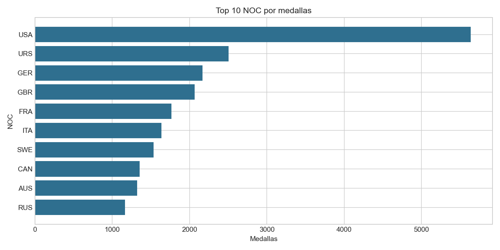
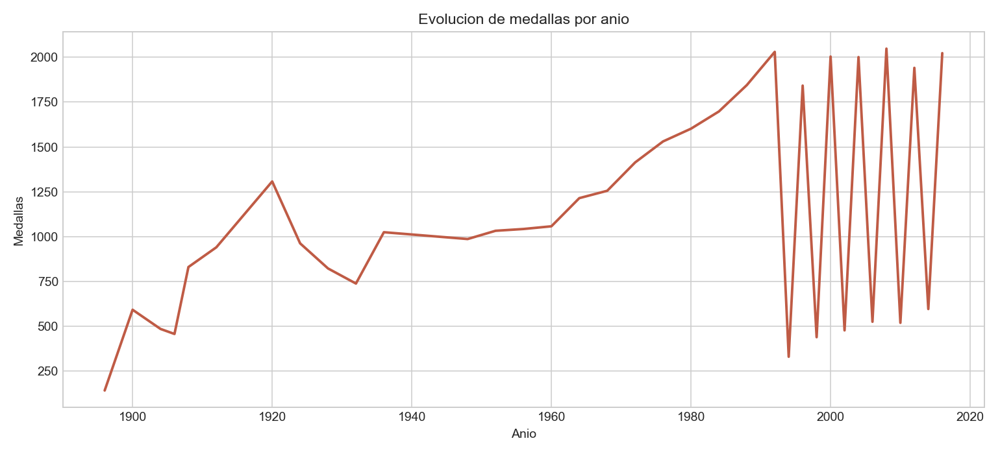
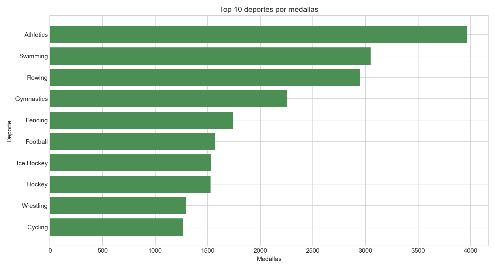
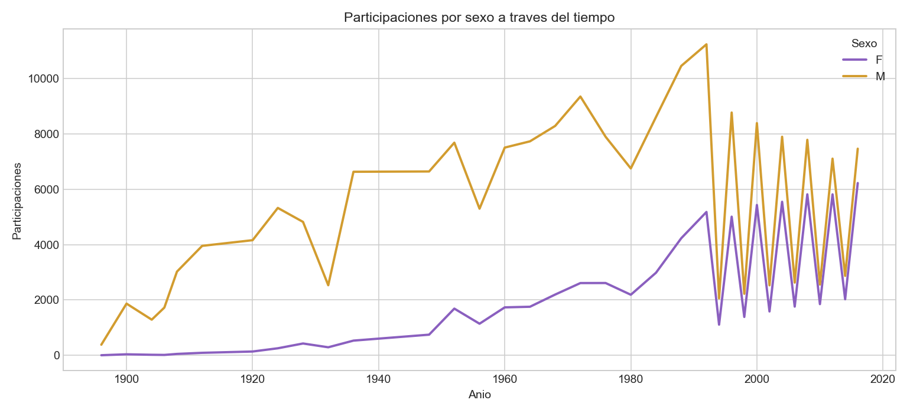

Desarrollar un proceso completo de analitica de datos sobre Juegos Olimpicos usando Microsoft BI y Python.
| Archivo | Filas | Rol |
|---|---|---|
| Athletes_Games.csv | 187,433 | Dimension Atleta |
| Edition_Games.csv | 52 | Dimension Edicion |
| equipos_Games.csv | 1,231 | Dimension Equipo/NOC |
| Events_Olimpycs.csv | 269,798 | Fuente enriquecida |
| JJ.OO.csv | 269,798 | Hechos de participacion |
Modelo estrella con fact_participacion como tabla de hechos y dimensiones de atleta, equipo, edicion y competencia.
Se limpiaron columnas de texto, se validaron llaves, se construyeron dimensiones y se crearon indicadores de medalla. La carga se realizo en SQLite y CSV para Power BI.




Para SSIS, cargar primero dimensiones y luego la tabla de hechos. Para SSAS, construir el cubo con las dimensiones y medidas indicadas. Para Power BI, usar un KPI, tres visualizaciones y un slicer interactivo.
| Criterio | Microsoft BI | Python |
|---|---|---|
| Facilidad | Visual y orientado a negocio. | Requiere codigo, pero es reproducible. |
| Flexibilidad | Fuerte en modelos gobernados. | Muy flexible para transformacion y analisis. |
| Escalabilidad | Alta con SQL Server, SSIS y SSAS. | Alta al integrarse con bases, Spark o nube. |
| Aplicabilidad | Reporting corporativo y dashboards publicados. | Exploracion, automatizacion y ciencia de datos. |
El modelo estrella permite analizar desempeno olimpico por NOC, deporte, evento, anio, temporada y sexo.